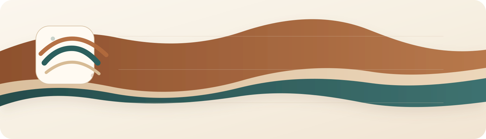

Ravel
RStudio-native AI copilot for serious R analysis.
It sees your code, models, objects, git changes, and reporting workflow, then helps like an analyst instead of a generic chatbot.


Install from CRAN Package website Reference Issues
Ravel is not just chat inside an IDE. It is designed to behave like an analysis copilot for R users: it understands the active script, selected code, loaded objects, model outputs, git changes, and reproducible reporting workflows so it can help with real RStudio work instead of acting like a generic web chatbot.
Sees real R context
Understands the active editor, selected code, loaded objects, session state, plots, project files, and recent git changes.
Built for statistical work
Explains lm() and glm() results, coefficients, interactions, diagnostics, model tradeoffs, and Quarto-ready reporting.
Acts safely
Stages code and file changes, requires approval by default, and keeps an auditable action history.
Active editor Selected code Loaded models Data frames Console state Git diffs Quarto drafting Safe execution
Install
Stable release from CRAN
install.packages("ravel")
library(ravel)
ravel::ravel_setup_addin()Development version from GitHub
if (!requireNamespace("pak", quietly = TRUE)) install.packages("pak")
pak::pak("msaule/ravel")
library(ravel)
ravel::ravel_setup_addin()Start in 60 seconds
- Install
ravelfrom CRAN. - Run
ravel::ravel_setup_addin()to connect at least one provider. - Run
ravel::ravel_chat_addin()in RStudio to open the chat UI.
Why it feels different
- Context-aware by default. Ravel gathers the active editor, selected code, workspace objects, console state captured through Ravel actions, project files, and recent git diffs before it responds.
-
Built for statistical work. It explains
lm()andglm()results, coefficients, interactions, fit diagnostics, and common modeling pitfalls in plain English. - Safe when it acts. Generated code is previewed, file edits are staged, and actions are logged instead of silently executed.
- Designed for RStudio. The setup flow, chat UI, and action workflow live inside RStudio addins rather than treating R as a thin wrapper around a generic chat window.
- Multi-provider without pretending. Ravel supports official APIs and official CLIs only, with clear messaging when a provider or auth path is unavailable.
Showcase workflows
These are the kinds of prompts where Ravel starts feeling very different from a normal chat window.
Diagnose a weird glm() before you trust it
Ravel sees the selected model code, the fitted object in memory, and the latest console output.
Why do these logistic coefficients explode?
Check whether separation is plausible,
tell me what diagnostics to run next,
and draft a Quarto diagnostics subsection.Useful when a model technically runs but the analysis feels wrong.
Rewrite a gnarly tidyverse pipeline into base R
Ravel can use the active selection, nearby script context, and project files so the rewrite matches how the rest of the analysis is written.
Convert this dplyr pipeline to base R,
keep the same output shape,
and explain each transformation step.Good for teaching, package work, and mixed-style codebases.
Turn a fitted model into a report section
With a model object in memory, Ravel can help draft prose, interpretation, and chunk scaffolding that matches the current analysis.
Write a results section from this model,
explain the interaction in plain English,
and include a Quarto chunk for follow-up plots.Especially strong when you already have lm() or glm() objects loaded.
Use git-aware context to review an analysis diff
Ravel reads the workspace git state and recent diffs, then helps reason about whether a change is cosmetic, risky, or statistically meaningful.
Summarize what changed in this analysis,
tell me which edits could change results,
and suggest a validation checklist before merge.Helpful when you want a reviewer that understands both code and analysis intent.
Explain factor levels and interactions without hand-waving
Ravel can inspect model summaries and object structure, then translate coefficient tables into plain language that is actually usable.
Explain these coefficients like I have to present them.
What is the reference group?
How does the interaction change the main-effect interpretation?Ideal for teaching, presentations, and cleaning up methods/results language.
Recover from an ugly error with the real workspace in view
Instead of pasting fragments into a browser tab, you can keep the active script, objects, and recent output attached to the same conversation.
Why is this join failing right now?
Use the selected code and loaded objects,
then propose the smallest safe fix.This is where the RStudio-native workflow matters most.
What Ravel sees right away
- Active editor contents and selected code
- Loaded objects, including data frames, formulas, and fitted models
- Ravel-managed console output and current session details
- Project files, working directory, and package context
- Workspace and editor git state, including recent diffs
What it helps with
- Explain selected R code and debugging errors
- Interpret model summaries, coefficients, interactions, and diagnostics
- Compare modeling choices and suggest next checks
- Refactor tidyverse and base R code in either direction
- Draft Quarto methods, results, and diagnostics sections
- Preview code and file actions before applying them
Built for people doing real R work
- Analysts working in RStudio on scripts, reports, and iterative modeling
- Students learning how code, model output, and interpretation connect
- Researchers writing Quarto or R Markdown from live analysis objects
- Data science teams reviewing analytical changes, not just syntax
- Anyone who wants safer execution than copy-pasting from a browser chatbot
Provider support
Ravel is explicit about what is supported today and what is still constrained by official provider boundaries.
| Provider | Status | Auth paths in Ravel | Notes |
|---|---|---|---|
| OpenAI API | Implemented | API key | Implemented against OpenAI HTTP APIs. |
| OpenAI Codex / ChatGPT | Working | Codex CLI sign-in, API key fallback | Ravel can use the official Codex CLI as a login-first OpenAI path, and can fall back to it automatically when the API path is rate-limited in auto mode. |
| GitHub Copilot | Working | Copilot CLI OAuth/device flow, GitHub CLI OAuth token | Ravel uses the official standalone Copilot CLI. It can authenticate via copilot login or supported GitHub tokens such as the OAuth token from gh auth. |
| Gemini | Implemented for API key, OAuth-ready abstraction | API key, bearer token/OAuth-style token slot | API-key flow is implemented. OAuth is represented in the auth abstraction so the provider boundary stays clean. |
| Anthropic | Implemented | API key | Official API-key auth only. No consumer-login mode is claimed. |
Safety defaults
- No silent code execution by default
- No silent file edits by default
- Explicit previews and approvals
- Structured history for actions and conversations, stored in session memory by default
- Honest provider and auth messaging
- Statistical caveats when assumptions or limitations are visible
Non-sensitive settings and history stay in session memory by default, so Ravel does not write into a user’s home filespace unless storage paths are configured explicitly through options(ravel.user_dirs = list(config = "<path>", data = "<path>")).
Learn more
- CRAN package page: https://cran.r-project.org/package=ravel
- Package website: https://msaule.github.io/ravel/
- Showcase article: https://msaule.github.io/ravel/articles/ravel-showcase.html
- ARCHITECTURE.md explains the layers and execution model.
- ROADMAP.md lays out the planned phases beyond the MVP.
- CONTRIBUTING.md explains the developer workflow and release checks.
- RELEASING.md captures the CRAN and R-universe release path.
- CODE_OF_CONDUCT.md describes community expectations.
- AGENTS.md describes collaboration conventions for contributors and coding agents.
For contributors
If you are developing on the repository locally, prefer:
devtools::load_all(".")Use devtools::install(".") only when you specifically need the installed package. Full release and submission details live in RELEASING.md.
References
The auth and provider boundaries in this project follow official documentation:
- OpenAI Codex CLI: https://developers.openai.com/codex/cli
- OpenAI API auth: https://developers.openai.com/api/reference/overview
- GitHub CLI
gh copilot: https://cli.github.com/manual/gh_copilot - Gemini API docs: https://ai.google.dev/gemini-api/docs
- Anthropic API docs: https://docs.anthropic.com/en/api